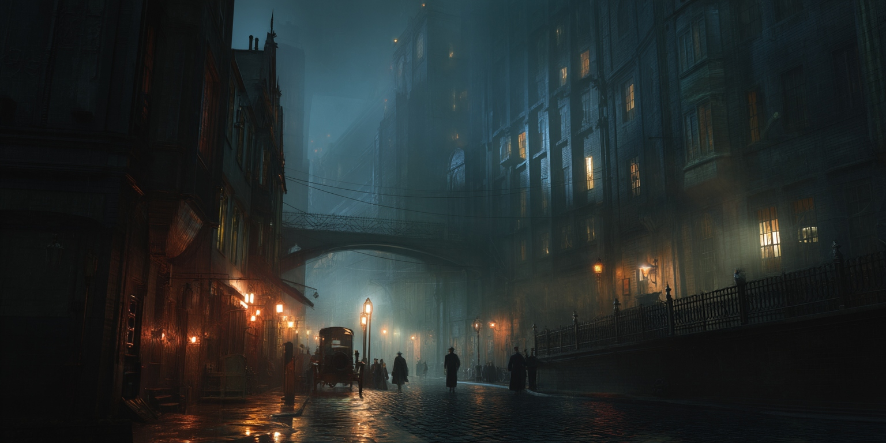
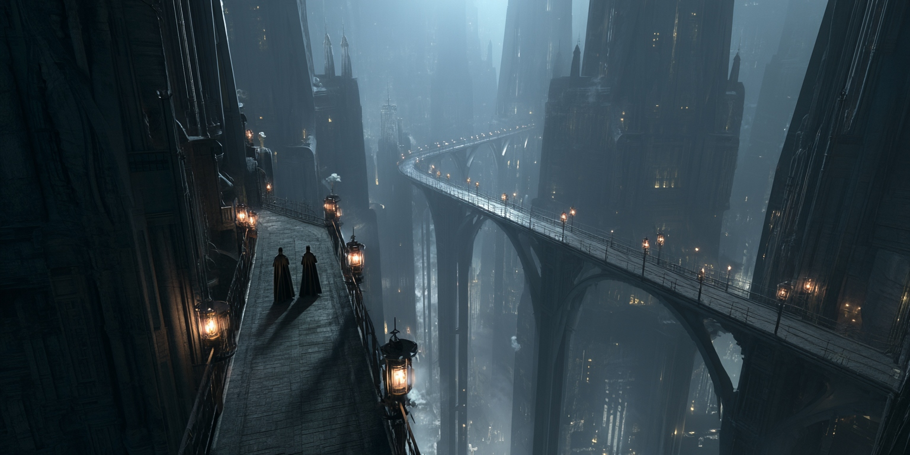

The Unknown
Mysteries & Threats
Not everything in Sharn can be explained by politics or crime. Some threats are older, stranger, and far more dangerous than any noble feud.

The Gloom
A permanent supernatural darkness that has settled over the world. Post-Gloom wine from House Necato's vineyards carries "potent, spicy flavor." Travelers from beyond the Shard Mountains claim large swaths of the Lost Lands are mysteriously Gloom-free, enjoying blue skies and sunlight. The Ministry of Information won't confirm. What caused the Gloom? Is it receding? Why only in certain places?
Vigil the Warforged Prophet
A warforged who loudly proclaims visions on the streets of Sharn. Dropped out of sight, then was sighted aboard a lightning rail bound for the frontier province of Aundair. What does he see? What compelled him to leave?
Lady Halvaren's Vanishing
The Emperor's own cousin disappeared mid-toast at a Skyway party. Her wine glass hung suspended in mid-air. House staff escorted guests out and refuse comment. This is magical disappearance at the highest level of imperial power.
The Serial Art Thief
A pattern of sophisticated thefts: the Del Coeur Emerald from the Museum of Imperial Romantic History (Nov 2024), pieces from the Ezrekiel Gallery (June 2025), the Tears of the Angels necklace from Mithral Tower (June 2025, later recovered), and a mystery climber scaling structures in Mithral Tower and Platinum Heights. Investigator Quade Umbrielle is on the case.
The Dragon in the Slums
Orphans at the Hollow Hope witnessed a massive cargo wagon carrying a slumbering scaled creature through Lower Dura. Corrupt gate-guards were paid off. A dragon? A dinosaur? Something from the Cogs? And where was it taken?
Lights in the Sewers
An eerie golden glow pulsing from storm drains in Lower Tavick's Landing. One observer claims he heard humming, "like a choir singing underwater." City sanitation blames elemental runoff. Nobody believes them.
The Emerald Claw
Recruitment ads in the February 2026 Inquisitive: "Make a difference. Don the green." A paramilitary organization openly recruiting. What do they want? Who do they serve?

Framework Expanded mystery analysis to follow.